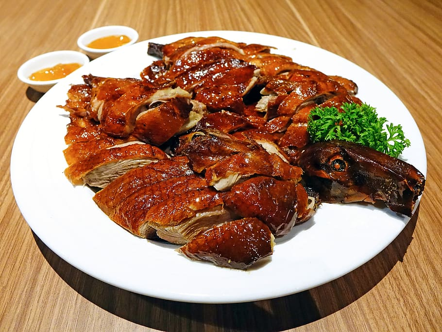

ROASTED PECKING DUCK

INGREDIENTS
- 1 whole duck (around 5-6 pounds)
- 1 tablespoon maltose syrup
- 1 tablespoon warm water
- 1 tablespoon five-spice powder
- 1 tablespoon salt
- 1/4 cup honey
- Mandarin pancakes
- Sliced cucumbers
- Scallions
- Hoisin sauce
INSTRUCTIONS
- Preheat the oven to 375°F (190°C).
- Clean the duck and pat it dry with paper towels.
- In a small bowl, mix together 1 tablespoon of maltose syrup and 1 tablespoon of warm water. Brush the mixture onto the duck, making sure to cover it evenly.
- In a separate bowl, mix together 1 tablespoon of five-spice powder and 1 tablespoon of salt. Rub the mixture onto the duck, again making sure to coat it evenly.
- Place the duck on a roasting rack in a roasting pan, breast side up. Roast the duck in the preheated oven for 45 minutes.
- In a small saucepan, heat up 1/4 cup of honey until it becomes runny.
- After 45 minutes, remove the duck from the oven and brush the honey all over the skin.
- Return the duck to the oven and continue to roast for another 30 minutes, or until the skin is crispy and golden brown.
- Remove the duck from the oven and let it rest for 10-15 minutes before carving.
- Carve the duck into thin slices and serve with Mandarin pancakes, sliced cucumbers, scallions, and
Hoisin sauce.
- Enjoy your delicious Peking Roast Duck!